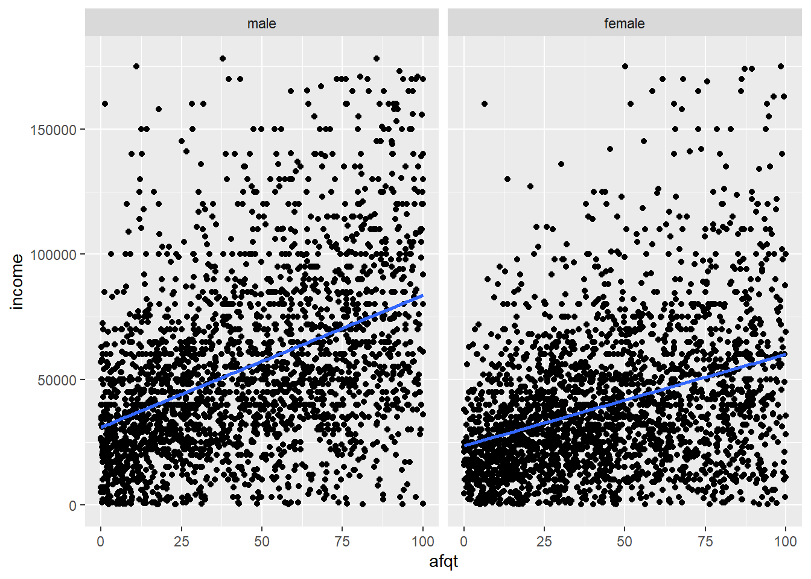
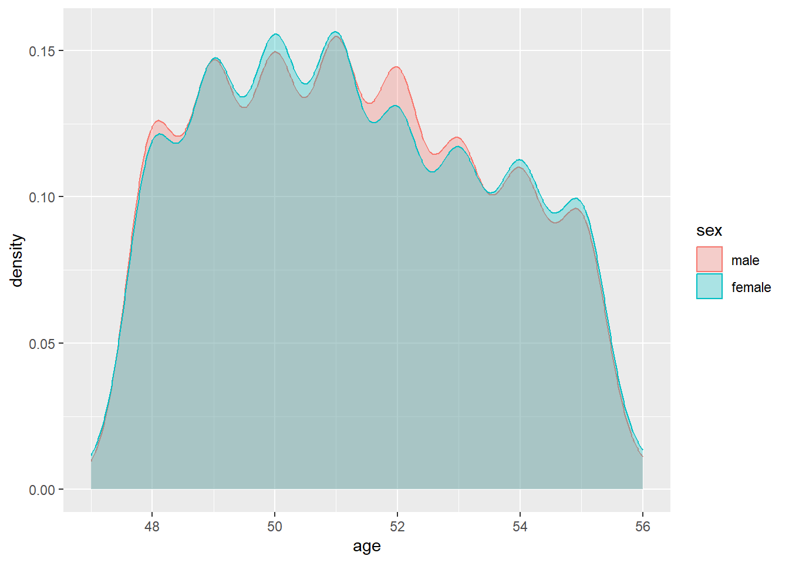

I denne oppgaven skal vi se på to ulike sammenhenger. Sammenhengen mellom evnenivå og inntekt, og sammenhengen mellom ansiennitet og inntekt.
Vi bruker datasettet heights og deler datasettet opp i tre ulike fordelt på inntektsnivået. Det første settet er for de med ingen inntekt. Det andre settet er for normal inntekt der selve inntekten er mellom 0 og 343 830 amerikanske dollar. Det siste settet er for de med inntekt fra 343 830 amerikanske doller og oppover.
Når vi sammeligner evnenivå og inntekt, bruker vi variabelen afqt. Dette er en måleenhet som det amerikanske militæret bruker til å måle evnenivå. “What Do ASVAB Scores Mean | ASVAB Career Exploration Program” (n.d.)
Litteraturgjennomgang
<<<<<<< HEAD Tidligere forskning viser at det er en sammenheng mellom inntekt og evnenivå. det er påvis at for hvert ekstra IQ poeng, kan inntekten øke fra $234 til $616 per år Zagorsky (2007a). Tidligere forskning med søsken viser at forholdet mellom inntekt og evnenivå er sterkere mellom søstre sammenlignet med brødre Bound, Griliches, and Hall (1986) ======= Tidligere forskning viser at det er en sammenheng mellom inntekt og evnenivå. det er påvis at for hvert ekstra IQ poeng, kan inntekten øke fra $234 til $616 per år Zagorsky (2007a). Tidligere forskning med søsken viser at forholdet mellom inntekt og evnenivå er sterkere mellom søstre sammenlignet med brødre Bound, Griliches, and Hall (1986) >>>>>>> 5115c6456a1a522822a5823f9593f760ba3a535a
.
Sammenheng mellom inntekt og evnenivå
#| warning: false#sammenheng mellom afqt og inntekt i hoydeNormInchoydeNormInc |>ggplot(mapping =aes(x = afqt, y = income)) +geom_point() +geom_smooth()
`geom_smooth()` using method = 'gam' and formula = 'y ~ s(x, bs = "cs")'
I overstående plott ser vi en sammenheng mellom evnenivå og inntekt i datasettet hoydeNormInc. Vi ser en stigning i den linjære linjen, noe som tilsier at økt envenivå gir høyere inntekt.
#afqt i hoydeZeroInc og hoydeHighIncggplot(data = hoydeZeroInc )+geom_histogram(mapping =aes(x = afqt, y =after_stat(density)),alpha =0.3,colour ="blue",fill ="blue" )+geom_histogram(data = hoydeHighInc,mapping =aes(x = afqt, y =after_stat(density)),alpha =0.5,colour ="red",fill ="red" )
I dette histogrammet ser vi på sammenhengen mellom evnenivået i to ulike datasett. Datasettene som er brukt er hoydeZeroInc og hoydeHighInc. Her ser vi at det er en klar differane i evnenivået i de ulike datasettene. Datasettet med høy inntekt har helt klart høyere grad av envenivå sammenlignet med datasettet med ingen inntekt.
#sammenheng mellom afqt og inntekt, facet mht. kjønnmy_hoyde <-data.frame(afqt = hoyde$afqt,income = hoyde$income, sex = hoyde$sex)ggplot(data = hoyde,mapping =aes(x = afqt, y = income) ) +geom_point(data = my_hoyde,mapping =aes(x = afqt, y = income)) +geom_smooth(method = lm) +facet_wrap(~ sex)

Her ser vi at det er sterkere vekst av inntekt hos mennene sammenlignet kvinner når det kommer til evnenivå.
#sammenheng mellom edu_fac/education og afqtggplot(data = hoyde,mapping =aes(x = edu_fac,y = afqt )) +geom_boxplot() # Add a box plot
<<<<<<< HEAD Her ser vi en klar sammenheng mellom utdanningsnivå og evnenivå. Vi ser at for hvert utdanningsnivå så øker medianen til evnenivået. Det som befinner deg innenfor boksene, er de miderste 50 % av verdiene. Vi kan se her at det er større spredning på evnenivået på de med høyere utdannen sammenlignet med de som ikke har utdannelse ======= Her ser vi en klar sammenheng mellom utdanningsnivå og evnenivå. Vi ser at for hvert utdanningsnivå så øker medianen til evnenivået. Det som befinner deg innenfor boksene, er de miderste 50 % av verdiene. Vi kan se her at det er større spredning på evnenivået på de med høyere utdannen sammenlignet med de som ikke har utdannelse >>>>>>> 5115c6456a1a522822a5823f9593f760ba3a535a
#sammenheng mellom høyde og afqthoyde |>select(afqt, height) |>ggplot(mapping =aes(x = afqt, y = height)) +geom_point() +geom_smooth()
I dette plottet har vi sammenlighet evnenivå og høyde. Vi kan se her at liten stigning i den linjære linjen. Dette kan muligens forklares ved hjelp av det neste histogrammet. I histogrammet sammenligner vi evnenivå på kvinner og menn. Her ser vi at det er flest menn på høyt evnenivå. Menn er også gjennomsnittlig høyere enn kvinner.
# sammenligner afqt kvinner og menn på hele datasettet (ekstra) hoyde |>ggplot() +geom_histogram(data =filter(hoyde, sex =="male"),mapping =aes(x = afqt, y =after_stat(density)),alpha =0.3,colour ="blue",fill ="blue" ) +geom_histogram(data =filter(hoyde, sex =="female"),mapping =aes(x = afqt, y =after_stat(density)),alpha =0.5,colour ="red",fill ="red" )
Sammenheng mellom ansiennitet og inntekt
Vi lager en scatter-plot med regresjonslinje for å undersøke om det er sammenheng mellom ansennitet og inntekt.
Det virker som at regresjonslinjen er lineær, det vil si at det ikke virker å være sammenheng mellom ansennitet og alder. Dette virker snodig, men vi må ha i bakhodet at datasettet vi arbeider med har aldersgruppene 48-56, noe som kan tilsi at de allerede er på toppen av sin ansennitet
Vi undersøker deretter om det er sammenheng mellom ansennitet og alder på de forskjellige kjønn:
Regresjonslinjen viser igjen at mer ansennitet ikke nødvendigvis gir høyere lønn, selv fordelt på kjønn.
Vi lager et histogram av dataene fordelt på undergrupper.
Vi starter med å regne ut gjennomsnittlig ansennitet og standardavvik for hhv. menn og kvinner. Disse parametrene vil vi bruke for å tegne inn normalfordelingskurver i samme plot.
Histogrammene viser at i dette datasettet er det mer kvinner enn menn i aldersgruppen 53-56 år. Da kvinner har lavere inntekt enn menn kan dette forklare resultatet i sammenhengen mellom ansennitet og alder. Jo lengre ansennitet en har, jo høyere er kvinneandelen, med medførende lavere inntekt, som kan forklare at lengre ansennitet ikke fører til høyere lønn. Det er ikke lønna som går ned, det er at menn med høyere inntekt forsvinner.
Vi undersøker om det er markante kjønnsforskjeller mht. alder i hoydeZeroInc, hoydeHighInc og HoydeNormInc.
hoyde |>ggplot() +geom_histogram(data =filter(hoydeNormInc, sex =="male"),mapping =aes(x = age, y =after_stat(density)),alpha =0.3,colour ="blue",fill ="blue" ) +geom_histogram(data =filter(hoydeNormInc, sex =="female"),mapping =aes(x = age, y =after_stat(density)),alpha =0.5,colour ="red",fill ="red" )
`stat_bin()` using `bins = 30`. Pick better value with `binwidth`.
`stat_bin()` using `bins = 30`. Pick better value with `binwidth`.
hoydeNormInc |>ggplot(mapping =aes(x = age,y = income ) ) +geom_smooth(formula = y ~ x,method ="lm",colour ="black",lwd =0.75,se =FALSE )
hoyde |>ggplot() +geom_histogram(data =filter(hoydeZeroInc, sex =="male"),mapping =aes(x = age, y =after_stat(density)),alpha =0.3,colour ="blue",fill ="blue" ) +geom_histogram(data =filter(hoydeZeroInc, sex =="female"),mapping =aes(x = age, y =after_stat(density)),alpha =0.5,colour ="red",fill ="red" )
`stat_bin()` using `bins = 30`. Pick better value with `binwidth`.
`stat_bin()` using `bins = 30`. Pick better value with `binwidth`.

hoydeZeroInc |>ggplot(mapping =aes(x = age,y = income ) ) +geom_smooth(formula = y ~ x,method ="lm",colour ="black",lwd =0.75,se =FALSE )
hoyde |>ggplot() +geom_histogram(data =filter(hoydeHighInc, sex =="male"),mapping =aes(x = age, y =after_stat(density)),alpha =0.3,colour ="blue",fill ="blue" ) +geom_histogram(data =filter(hoydeHighInc, sex =="female"),mapping =aes(x = age, y =after_stat(density)),alpha =0.5,colour ="red",fill ="red" )
`stat_bin()` using `bins = 30`. Pick better value with `binwidth`.
`stat_bin()` using `bins = 30`. Pick better value with `binwidth`.
hoydeHighInc |>ggplot(mapping =aes(x = age,y = income ) ) +geom_smooth(formula = y ~ x,method ="lm",colour ="black",lwd =0.75,se =FALSE )
Histogrammet viser at i gruppen høy inntekt har aldersgrupper hvor det ikke forekommer kvinner, dette vil som tidligere nevnt gjøre at det ser ut som at jo høyere ansennitet ikke på¨virker lønn.
Konklusjon
Vi ser en klar sammenheng mellom evnenivå og inntekt. Som vi så i box-plottet kan dette skyldes at de med høyest utdannelse har høyere evnenivå sammenlignet med de som ikke har utdannelse. En logisk konklusjon er at de me høyere utdannelse får seg jobber som gir høyere lønn.
Referanser
Bound, John, Zvi Griliches, and Bronwyn H. Hall. 1984. “Brothers and Sisters in the Family and the Labor Market.” Working {{Paper}}. Working Paper Series. National Bureau of Economic Research.
———. 1986. “Wages, Schooling and IQ of Brothers and Sisters: Do the Family Factors Differ?”International Economic Review 27 (1): 77–105. https://www.jstor.org/stable/2526608.
“What Do ASVAB Scores Mean | ASVAB Career Exploration Program.” n.d. https://www.asvabprogram.com/media-center-article/103. Accessed October 22, 2023.
Zagorsky, Jay L. 2007a. “Do You Have to Be Smart to Be Rich? The Impact of IQ on Wealth, Income and Financial Distress.”Intelligence 35 (5): 489–501.
———. 2007b. “Do You Have to Be Smart to Be Rich? The Impact of IQ on Wealth, Income and Financial Distress.”Intelligence 35 (5): 489–501.